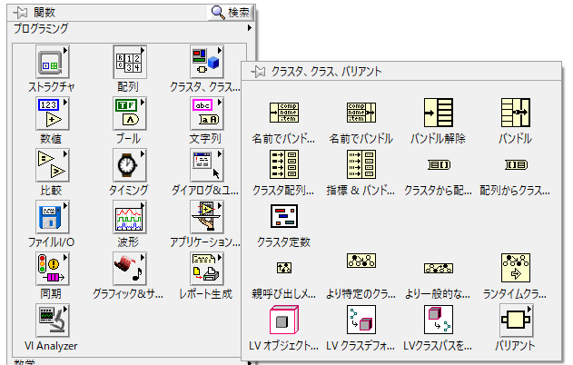
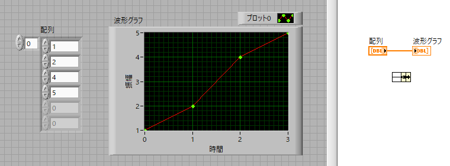
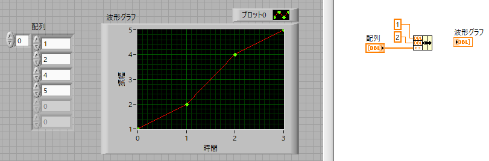
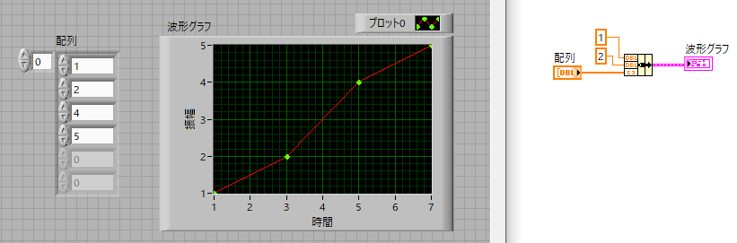

波形グラフ-02
等間隔のまま，値を変えたい場合には，
始まる値
間隔
をグラフに指定しなくてはなりません．そのコマンドは，
バンドル
です．

クラスタ，クラス，バリアント → バンドル
となります．

右のブロックダイヤグラムに左側に入力が2個あるアイコンができあがりました．
情報は，
始まる値
間隔
データ
なので，一つ広げて３つにします．
この３つの端子には，上から，
始まる値
間隔
データ
を結線します．

ここでは，
始まる値 ： 1
間隔 ： 2
です．
次に，バンドル右端子を先ほどの”波形グラフ’に結線します．
すると，ピンク色の線，アイコンに変わることがわかります．
実行すると，

のように，開始値，間隔が指定したとおりになることがわかります．
では，複数のデータを一つのグラフに描くときにはどうしたらよいでしょう？
次のページで説明します．


，